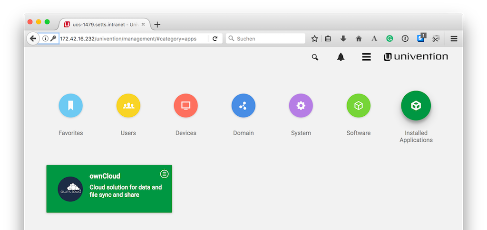

How to Update ownCloud¶
There are two options to update an ownCloud installation hosted on an ownCloud X Appliance:
Warning
Do not use the ownCloud built in web updater!
Use the Univention Management Console¶
Using the Univention Management Console, there are two paths to upgrade an existing ownCloud installation:
- In-place Upgrade (for 10.0 users)
- Uninstall the Existing Version and Install the New Version (for 9.1 users)
In-place Upgrade (for 10.0 users)¶
Note
Existing certificates and themes persist after an upgrade
To perform an in-place upgrade, after logging in to the Univention server, under “Administration”, click the first option labeled “System and domain settings”. This takes you to the Univention Management Console. From there, click the “Software” shortcut (1), and then click “Software update” (2).
This will load the Software update management panel, after a short time scanning for available updates. If an update is available, under “App Center updates” you will see “There are App Center updates available”. If one is, as in the image below, click “ownCloud” which takes you to the ownCloud application.

When there, part-way down the page you’ll see the “Manage local installation” section. Under there, click “UPGRADE”.

Before the upgrade starts, a prompt appears titled “App Installation notes”. This is nothing to be concerned about. So check the checkbox “Do not show this message again”. Then click “CONTINUE”.
Next an upgrade confirmation page appears. To accept the confirmation, click “UPGRADE” on the far right-hand side of the confirmation page.
This launches the upgrade process, which requires no manual intervention. When the upgrade completes, the ownCloud app page will be visible again, but without the “UPGRADE” button. Now, login to ownCloud by clicking the “OPEN” button, on the far right-hand side of the page.
Uninstall the Existing Version and Install the New Version (for 9.1 users)¶
Open your ownCloud X Appliance and go to the “System and Domain Settings” dashboard. Then, after logging in, click “Installed Applications”, and then click ownCloud.
This takes you to the ownCloud app settings page. From there, begin uninstalling ownCloud by clicking “UNINSTALL” under “Manage local installations”
This takes you to an uninstall confirmation page. On that page, click UNINSTALL on the lower left-hand side of the page.
Follow the process until it’s finished. Then, click on “Close” in the upper right corner.
Note
Your data and users will remain.

Following that, go to “Software - Appcenter”, and search for “ownCloud”. At the moment, two matching results will be returned. Pick the one that does not contain a version number.
To confirm the version number, scroll to the bottom of the page, and in the More information section, look for the version string, next to Installed version, as in the screenshot below.

If it is the right version, click “INSTALL”. Then the License Agreement is displayed. If you agree to it, click “ACCEPT LICENSE”. This will display an installation confirmation screen. To confirm the installation, click “INSTALL”.
The installation will then be carried out. When it is finished, you will have the latest version of ownCloud installed.
Note
Your data and users will persist.
Use the Command Line¶
As with the Univention Management Console, there are two paths to upgrade an existing ownCloud installation from the command line:
Upgrading From Version 10.0.1 to 10.0.3¶
Upgrading from the command line is also available. To do so, login to your ownCloud X Appliance, either via ssh or directly on the server. Once logged in, check if there is an upgrade available.
You can use the command univention-app info.
This command lists information about the current state of every installed App.
root@ucs-9446:~# univention-app info
UCS: 4.2-1 errata165
App Center compatibility: 4
Installed: 4.1/owncloud=10.0.1-20170523
Upgradable: owncloud
If an upgrade is available, you then need to run the univention-app upgrade, as in the example below.
univention-app upgrade owncloud
You will have to enter your Administrator password to start the upgrade. This command takes some time to complete, primarily based on the appliance’s network connection speed. However, it should not take more than a few minutes.
After the upgrade has completed (if it was successful) as a sanity check, run univention-app info, to confirm the currently installed version of ownCloud.
As in the example below, you should see that the installed version is now higher than before, and that ownCloud is no longer upgradable.
root@ucs-9446:~# univention-app info
UCS: 4.2-1 errata165
App Center compatibility: 4
Installed: 4.1/owncloud=10.0.3-20170918
Upgradable:
Upgrading From Versions Prior to 10.0¶
If you’re running a version of ownCloud prior to 10.0, the above in-place upgrade doesn’t work.
This is because the earlier versions of ownCloud are installed with a different application to the 10.x version.
More specifically, the versions of the ownCloud app, prior to 10, have a version suffix in the name.
For example the ownCloud 8.2 app is named owncloud82.
Given that, you first have to uninstall the existing version and then install the 10.x version. To do so, run the following commands:
# Assumes that owncloud82 is the currently installed version
univention-app remove owncloud82
univention-app update
univention-app install owncloud
And after the upgrade and updates are completed, you can then login to ownCloud and verify the upgrade.